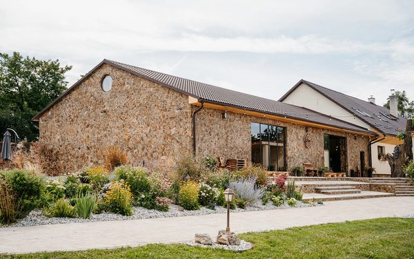
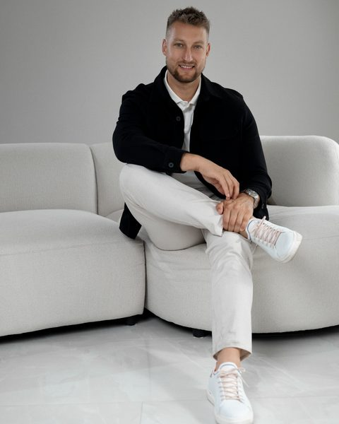
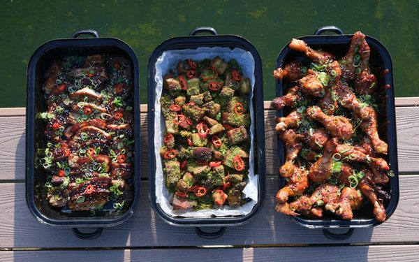

Nový Dvůr Lhotka
Svatební a eventový areál u Přerova, který jsem vybudoval – tři dny, celý areál jen pro Vás, až 150 hostů.
Zázemí v Přerově · klienti po celé ČR
Pojištění auta, hypotéka, investice i finance firmy. Radím z vlastní praxe, ne z brožury – a nejsem na to sám: mám tým, který pracuje jen pro mé klienty, a aplikaci MyPlann, kde máte všechno na jednom místě.
Co nepotřebujete, u mě nekoupíte.
Proč já
Tým, praxe a férovost. V oboru, kde si poradce obvykle dělá všechno sám, je to rozdíl – poznáte ho ve chvíli, kdy potřebujete něco rychle a pořádně vyřídit.
Tři asistentky a koncipient, které platím, nedělají vlastní obchody. Zpracovávají pro mě a mé klienty smlouvy, hlídají termíny, řeší servis a vyřizují pojistné i jiné události. Odborné otázky probíráte se mnou, o zbytek se postará můj tým – a Vám nic nezapadne.
Sám mám hypotéky, stavěl jsem i rekonstruoval – mimo jiné celý svatební areál Nový Dvůr. Vím, kdy při stavbě peníze potřebujete a kdy je nechat ležet. Financoval jsem sebe i své klienty mnohokrát, řešil za ně pojistné události i spory s pojišťovnou. Když banka řekla, že to nepůjde, vymyslel jsem, jak to půjde.
Vybírám z nabídky mnoha bank, pojišťoven a investičních společností, ne z katalogu jedné z nich. Pojištění, které potřebujete, budu důrazně doporučovat a vysvětlím proč. To, které nepotřebujete, u mě nekoupíte – peníze navíc patří Vám a Vaší rodině, ne bance nebo pojišťovně. V investicích hlídám poplatky a své vlastní peníze investuji stejně, jak radím klientům – a na schůzce Vám to klidně ukážu.
Pro koho pracuji
Kupujete první bydlení, čekáte dítě nebo chcete konečně vědět, na co všechno platíte. Dáme to dohromady – bydlení, ochranu příjmu, rezervy a investice – bez zbytečných smluv.
Firma roste, nebo potřebuje přečkat horší rok, a osobní finance jsou s ní propojené. Financování a pojištění firmy vyřešíme bez obíhání bank.
Máte vyhlédnutý pozemek, dům po rodičích nebo rozpočet, který nesedí. Financování po etapách, výběr banky a pojištění stavby.
Pokud hledáte jen nejlevnější pojistku bez ohledu na to, co kryje, nebo chcete podepsat ještě dnes bez rozhovoru, nebudu pro Vás ten pravý.
Služby
Přijďte s jednou pojistkou nebo s velkým plánem. Vyberte si, čím začneme – ostatní na sebe navazuje a probereme to postupně.
Průběh spolupráce
Řeknete mi, co řešíte – v kanceláři v Přerově, u Vás nebo online. Představím se, zjistím, co potřebujete, a domluvíme si, co spolu uděláme, jak a za kolik. Někdy je to čtvrt hodiny, někdy tři hodiny – podle toho, co máte na stole.
Projdu Vaši situaci a stávající smlouvy. Vysvětlím možnosti, jejich náklady, podmínky i rizika – a řeknu rovnou, co nedává smysl.
Vyberete si postup. S týmem zařídíme zpracování a návazné kroky v domluveném rozsahu. Po prvním sjednaném produktu dostanete přístup do aplikace MyPlann – můj tým Vás s ní seznámí.
Domluvíme způsob následného servisu. Když se změní Vaše rodina, práce, majetek nebo plány, nastavení znovu projdeme.
Kolik to stojí. Sjednání produktu Vás zpravidla nic nestojí – odměnu mi vyplácí daná instituce; kdyby to mělo být jinak, řeknu Vám to hned na začátku. Za službu, kterou žádná provize nepokrývá, se na ceně domluvíme předem. Co a za kolik si řekneme na první schůzce.

„Nejsem neomylný, ale když udělám chybu, postavím se k ní čelem a napravím ji.“
Pro jistotu
O mně
Poradce · Investor · Podnikatel · Táta
Financím se věnuji od roku 2010. Přes financování nemovitostí jsem se dostal k vlastním investicím (nemovitosti, akcie, zčásti i kryptoměny), rekonstrukcím i stavebnímu materiálu – chtěl jsem rozumět tomu, co s klienty řeším, i z praktické stránky. Dnes mám v portfoliu přes tisíc klientů a jejich počet organicky roste.
Nejsem na to sám. Tým, který platím a který nedělá vlastní obchody, se stará o servis mých klientů – já se díky tomu můžu věnovat tomu, co má největší cenu: rozhovoru s Vámi a hledání řešení.
Jsem moderní poradce. Všechno máte na jednom místě: v aplikaci MyPlann najdete své smlouvy a dokumenty, komunikovat se mnou můžete online a při práci používáme moderní nástroje včetně umělé inteligence. Inovace si nesu do všech oborů, ve kterých podnikám – a zpátky do poradenství.
Hypotéku, stavbu i rekonstrukci jsem si prošel na vlastní kůži a s klienty mnohokrát – vím, co přijde po podpisu: kdy banka chce podklady, kdy peníze skutečně potřebujete a co dělat, když něco nejde podle plánu. A když je něčí plán nesmysl, řeknu to rovnou – radši dnes u mě v kanceláři než za rok v bance.
Férovost u mě není slogan. Proto Vám řeknu i to, co se neprodává: že stávající pojistka stačí, že s investicí počkáme, nebo že nejlevnější hypotéka není nutně ta nejlepší.
Vedle financí vedu dvě úspěšné firmy: svatební areál Nový Dvůr ve Lhotce u Přerova, který jsem vybudoval, a SchmiStr catering. Díky nim znám podnikání z každodenního provozu a mám kolem sebe lidi z různých oborů, se kterými propojím i Vás. Zakládám si na přímé domluvě a dodržení slova. Nejsem neomylný, ale když udělám chybu, postavím se k ní čelem a napravím ji. A doma jsem především táta dvou dětí.
Nejen finance
Podnikání je součást mého života a lidé na Přerovsku obě firmy znají. Podívejte se sami.

Svatební a eventový areál u Přerova, který jsem vybudoval – tři dny, celý areál jen pro Vás, až 150 hostů.

Catering pro svatby, firemní akce i soukromé oslavy. Podnikání, které znám z každodenního provozu.
Pro rychlou představu
Čtyři otázky, které slýchám nejčastěji – odpověď si můžete spočítat hned teď. Čísla jsou orientační, zbytek probereme spolu.
Výchozí sazba je orientační – posuňte si ji podle nabídky, kterou máte.
Orientační výpočet bez pojištění a poplatků. Konkrétní podmínky připravím podle Vaší situace.
Chci probrat hypotékuOrientační výpočet s modelovým výnosem. Skutečný výnos závisí na zvolené strategii, v čase kolísá a není zaručen; konkrétní strategii nastavíme podle Vás.
Chci probrat investiceKontakt
Nové auto, vlastní bydlení, investice nebo další krok ve firmě? Zavolejte nebo napište, co máte před sebou. Krátce to probereme a domluvíme, jak dál – budete vědět, co vyřeším já, co zařídí můj tým a kdy přizveme někoho z lidí, se kterými spolupracuji.
Jste můj klient? Své smlouvy, dokumenty i komunikaci se mnou najdete v aplikaci MyPlann.
Přihlásit se do MyPlann